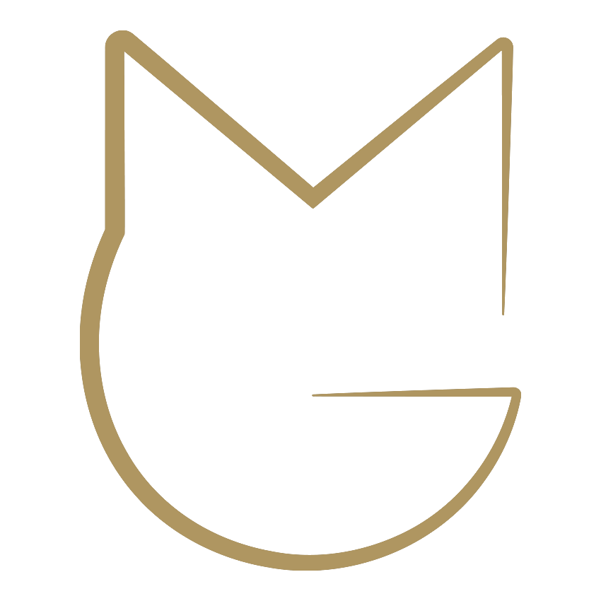

Me formé como desarrollador web full stack ya que disfruto construir aplicaciones escalables y bien estructuradas, tanto en el frontend como en el backend. Trabajo con React.JS, Node.JS, Express, MySQL y MongoDB, apoyándome también en sólidos conocimientos de HTML5, CSS3 y JavaScript. Me involucro en todo el proceso: desde el diseño y consumo de APIs REST hasta la integración de bases de datos.
Este sitio web presenta la esencia de Nona Irene, diseñado para dar a conocer su identidad, trayectoria y productos.
Tecnologías: CSS, React.js, Node.JS, JSON
Aplicación web de delivery de comida con formulario de contacto, panel de administración y API conectada a una base de datos MongoDB. Video app completa (con dashboard)
Tecnologías: React, Node.js, Express, MongoDB